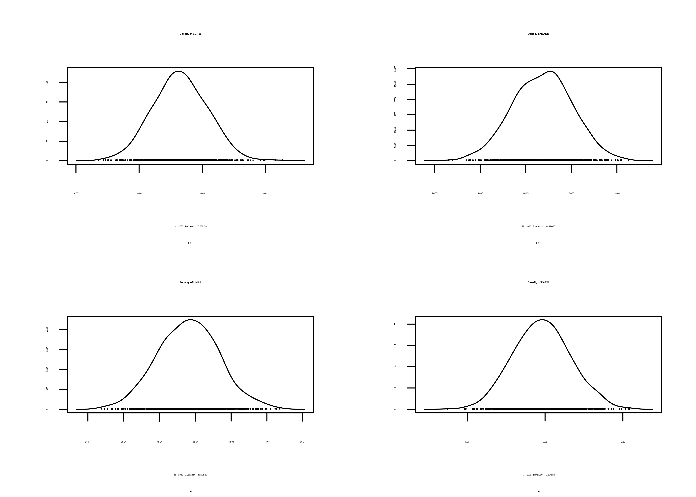
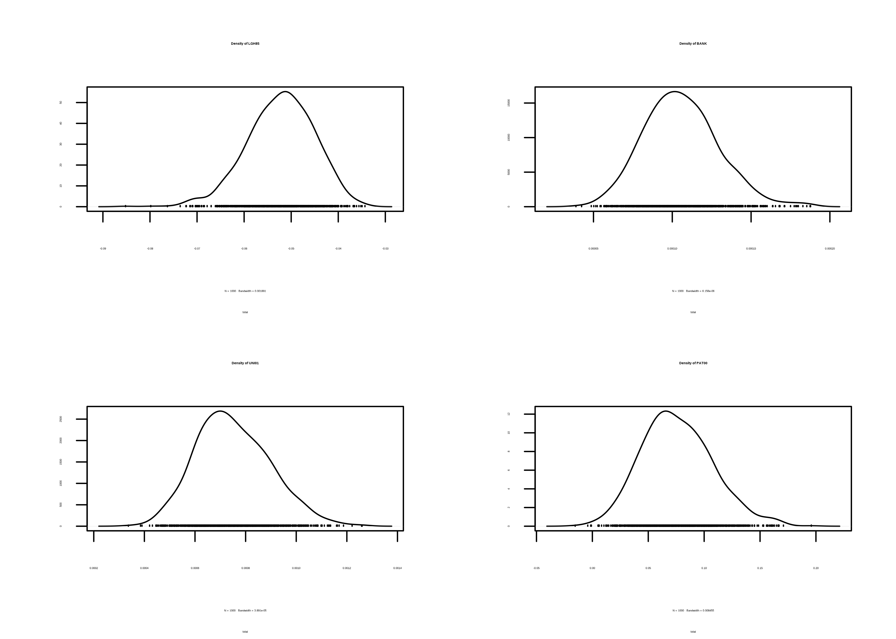
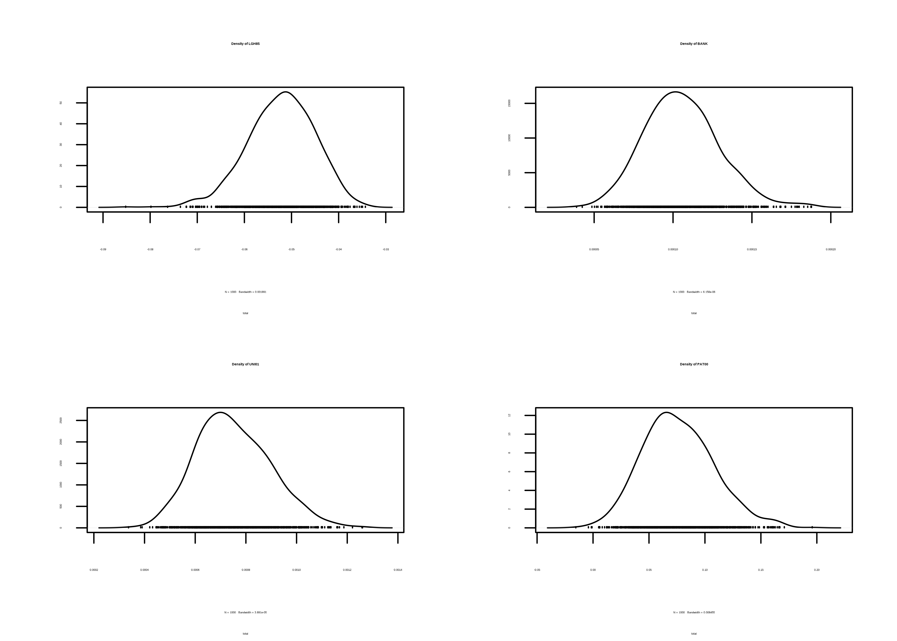

Capítulo 42 Modelos econométricos espaciales
Andrés Vallone y Coro Chasco
42.1 La dependencia espacial
En muchas ocasiones los fenómenos sociales no son independientes del espacio geográfico en el cual se producen, esto se refleja en la primera ley de la Geografía enunciada por W. R. Tobler (1970) “Todas las cosas están relacionadas entre sí, pero las cosas más próximas en el espacio tienen una relación mayor que las distantes” (Waldo R. Tobler 1970, p 236).Esta situación produce una violación del supuesto básico de independencia de las variables aleatorias requerido por el método de estimación de Minimos Cuadrados Ordinarios (MCO)
En este contexto, los MCO ya no son óptimos y, por tanto, los test \(t\) y \(F\) estadísticos pueden llevar a conclusiones erróneas(Anselin 1988). Por eso es necesario encontrar la manera de incorporar el espacio geográfico en nuestros modelos de estimación. En este capítulo abordaremos este asunto, mostrando primero los métodos de exploración de datos espaciales, para luego mostrar las formas de modelización del espacio y los métodos de estimación.
Los modelos de econometría espacial se centrar en manejar las situaciones de dependencia espacial. Existe dependencia espacial cuando lo que sucede un una unidad espacial \(i\) esta influenciado por lo que sucede en una unidad espacial \(j\) y viceversa (Anselin 2013). La dependencia espacial se traduce en que los valores de la variable de las unidades espaciales \(i\) y \(j\) con \(i\neq j\) estan correlacionados entre sí, hecho que se conoce como autocorrelación espacial (Anselin 2013). La autocorrelación espacial puede ser positiva, cuando la unidades espaciales con valores similares tienden a estar juntos (altos con altos, bajos con bajos) o negativa, cuando las unidades espaciales tienden a estar rodeadas de vecinos con valores diferentes. Los patrones espaciales formados por la existencia de autocorrelación se muestran en la Figura ??. La ausencia de algún tipo de autocorrelación es lo que se entiende como aleatoriedad espacial (Anselin 2013).

Figura 42.1: Patrones de autocorrelación espacial
42.1.1 Modelización del espacio: La matriz W
El espacio puede jugar un rol importante en la determinación de los procesos a modelizar. Por ello, resulta relevante encontrar una forma de incorporar el espacio en los procesos de estimación. Para modelizar la interacción de una variable consigo misma es natural pensar en el concepto de autocorrelación. No obstante, a diferencia de la autocorrelación temporal, que es unidireccional (sólo el pasado puede afectar el presente), en el caso del espacio la influencia es multidireccional en el entorno o vecindario de la unidad de análisis y, por tanto, es crucial definir el vecindario para poder realizar los análisis.
La matriz de vecindad \(\mathbf{W}_{n \times n}\) muestra la relación entre las \(n\) unidades espaciales analizadas. Esta matriz define la condición de vecindad y, de esta manera, la interacción existente entre las unidades espaciales. Esta matriz es simétrica y binaria, de forma que el elemento \(w_{ij} = 1\) si las unidades espaciales \(i\) y \(j\) son vecinas y cero si no lo son. Por tanto, \(w_{ii}=0\) puesto que una unidad espacial no puede ser vecina de si misma. Existen distintas criterios de definición de esta matriz dependiendo del proceso que se desee modelizar y las características de los datos. Si se cuenta con un mapa de polígonos, entonces podemos utilizar alguno de los criterios que se presentan en la Figura ?? para difinir la matriz \(\mathbf{W}\)
![Criterios de vecindad extraido de [@martori2008incorporacion]](img/plot-criterio-W.png)
Figura 42.2: Criterios de vecindad extraido de (Martori, Hoberg, and Madariaga 2008)
Las matrices \(\mathbf{W}\) generadas bajo el criterio lineal consideran como vecinos a la unidad espacial \(i\) todas aquellas unidades que compartan un borde situadas en la misma dirección cardinal, norte sur o este oeste, de esta unidad. El resto de los criterios de contigüidad siguen los movimientos de las piezas del ajedrez para definir la vecindad de la unidad espacial \(i\). La construcción de una matriz de vecindad bajo el criterio de la torre implica considerar como vecinos de la unidad espacial \(i\) aquellas unidades espaciales situadas al norte, sur, este u oeste y que compartan un borde en común con dicha unidad. El uso del criterio de alfil considera como vecindad de la unidad \(i\) aquellas unidades situadas al noreste, noroeste, sureste o suroeste de la unidad espacial \(i\) y que tengan, al menos, un punto en común. El criterio de la reina considera como vecindario de la unidad espacial \(i\) alas unidades espaciales en todas las direcciones cardinales y que tengan al menos un punto en común con la unidad espacial \(i\) (Martori, Hoberg, and Madariaga 2008).
Dependiendo del fenómeno que se analice la matriz de contigüidad puede ser construida considerando un vecindario más amplio; por ejemplo, considerando como vecinos de la unidad espacial \(i\) a los vecinos de los vecinos de dicha unidad. En este caso diríamos que la matriz es de orden 2 (los vecinos y los vecinos de los vecinos). Las matrices \(\mathbf{W}\) se utilizan para capturar el efecto del vecindario a partir de medias ponderadas basadas en la cercanía de las unidades espaciales. Es por ello que las matrices de vecindad se estandarizan por filas. Los elementos de la matriz estandarizada se obtienen de la siguiente manera:
\[\begin{equation} w^e_{ij}=\frac{w_{ij}}{\sum_{j=1}^n w_{ij}} \end{equation}\]
En palabras simples, se divide cada elemento de una fila de la matriz \(\mathbf{W}\) por la suma de dicha fila. Esto asegura que cada elemento de la matriz \(\mathbf{W}\) estandarizada se encuentre entre 0 y 1 y que la suma de cada una de sus filas sea siempre 1. Las matrices de vecindad estandarizadas llevan el nombre de matrices de pesos espaciales, a partir de ahora cuando se haga relación a la matriz \(\mathbf{W}\) estaremos hablando de una matriz de pesos espaciales.
Para el cálculo de las matrices de vecindad utilizaremos el paquete spedep (R. Bivand 2022). La función poly2nb construye la relación de vecindad a partir de los polígonos de un objeto espacial según el criterio y el orden que se indique; la función nb2listw transforma la relación de vecindad en una lista de pesos espaciales. Para el ejemplo, utilizaremos el conjunto de datos del estudio de Guerry (1833) utilizados en [Anselin (2017)]121.
library(spdep)
library("CDR")
reina <- poly2nb(guerry, queen = TRUE)
w_reina <- nb2listw(reina, style = "W", zero.policy = TRUE)
w_reina
#> Characteristics of weights list object:
#> Neighbour list object:
#> Number of regions: 85
#> Number of nonzero links: 420
#> Percentage nonzero weights: 5.813149
#> Average number of links: 4.941176
#>
#> Weights style: W
#> Weights constants summary:
#> n nn S0 S1 S2
#> W 85 7225 85 37.2761 347.6683Para construir una matriz de contigüidad de la torre de orden 1 se utilizan las mismas funciones, cambiando el parámetro queen de la función poly2nb
torre <- poly2nb(guerry, queen = FALSE)
w_torre <- nb2listw(torre, style = "W", zero.policy = TRUE)Cuando trabajamos con datos a nivel puntual, o cuando existen situaciones geográficas de no contigüidad como, por ejemplo, una isla, el uso de la matriz de contigüidad no es una condición tan evidente. En estos casos, resulta más oportuno definir la matriz de vecindad a partir de criterios de distancia. Las matrices de \(\mathbf{W}\) basadas en distancias pueden tener configuraciones continuas de la matriz respecto a la distancia \(d\) entre las unidades espaciales \(i\) y \(j\) de tal manera que \(w_{ij}=1/d_{ij}\) o \(w_{ij}=1/d_{ij}^2\) y \(w_{ii}=0\). Otras configuraciones implican considerar un numero \(k\) de vecinos más cercanos a cada unidad espacial de tal manera que:
\[\begin{align} \begin{cases} w_{ij}(k)=0 & i=j, \forall k \\ w_{ij}(k)=1 & d_{ij} \leq d_i(k)\\ w_{ij}(k)=0 & d_{ij} > d_i(k) \end{cases} \end{align}\]
donde \(d_i(k)\) es la k-esima menor distancia entre las unidades espaciales \(i\) y \(j\). Utilizando funciones de R. Bivand (2022) y E. Pebesma (2022) y los datos de Vallone and Chasco (2020) calcularemos la matriz de 5 vecinos más próximos de las áreas urbanas chilenas con más de 2000 habitantes.
library(sf)
# Se extraen las coordenadas de los puntos
coord <- st_coordinates(cities)
# Calcula la vecindad de 5 vecinos más cercanos
w5knn <- knearneigh(coord, k = 5, longlat = T) |> knn2nb()El uso de matrices de \(k\) vecinos puede forzar la vecindad entre unidades espaciales, considerando vecinas a unidades espaciales que estén muy distantes entre ellas. Para solucionar esto podemos usar una configuración de vecindad basada en una distancia limite \(d_{max}\) de tal manera que:
\[\begin{align} \begin{cases} w_{ij}=1 & d_{ij} \leq d_{max}\\ w_{ij}=0 & d_{ij} > d_{max}\\ \end{cases} \end{align}\]
El problema de esta definición es la posibilidad de generar unidades espaciales aisladas debido a una definición muy estrecha de la distancia máxima (\(d_{max}\)). Esto se evita fijando la distancia máxima de tal manera que se asegure que todas las unidades espaciales tengan al menos un vecino.
# Calcula la k=1 matriz W
knn1 <- knearneigh(coord) |> knn2nb()
# Obtiene la distancia critica
distancia.critica <- max(unlist(nbdists(knn1, coord)))
# genera la matriz de vencindad de distancia w_ij < d_max
k1 <- dnearneigh(coord, 0, distancia.critica)
w_dist <- nb2listw(k1)Debe considerarse que la configuración de \(k\) vecinos y de la distancia censurada dan lugar a matrices binarias, mientras que las matrices \(\mathbf{W}\) basadas en distancias, no lo son. Utilicemos el mismo conjunto de datos para realizar el cálculo de la matriz \(\mathbf{W}\) basado en la distancia inversa. Dos elementos deben considerarse: utilizar una función decreciente respecto distancia (en este caso una hipérbola) para satisfacer la ley de Tobler (Waldo R. Tobler 1970) y segundo, dado que la incidencia que puede tener una unidad espacial \(j\) que se encuentre muy lejana a la unidad \(i\) tiende a cero, (Waldo R. Tobler 1970), la matriz suele censurarse a una distancia máxima \(d_{max}\) a partir de la cual la incidencia entre unidades espaciales es nula, donde \(d_{max}\) es fijada de tal manera de evitar la existencia de unidades espaciales aisladas.
knn1 <- knearneigh(coord) |> knn2nb()
distancia.critica <- max(unlist(nbdists(knn1, coord)))
k1 <- dnearneigh(coord, 0, distancia.critica)
# Calcula la distancia entre los vecinos
dist.list <- nbdists(k1, st_coordinates(cities))
# Calcula la distancia inversa
i.dist.list <- lapply(dist.list, function(x) 1 / x)
# Crea la matriz W
w.dist.i <- nb2listw(k1, glist = i.dist.list, style = "W")Hemos indicado que la matriz \(\mathbf{W}\) se utiliza para capturar los efectos del espacio a partir de medias ponderadas, es decir mediante la matriz \(\mathbf{W}\) seremos capaces de construir el retardo espacial. El retardo espacial \(\mathbf{W}y\) de la variable \(y\) se obtiene al multiplicar dicha variable por la matriz \(\mathbf{W}\), por tanto, cada elemento del retardo espacial puede ser interpretado como la media ponderada de la variable \(y\) en el vecindario de cada unidad espacial \(i\),
42.2 Medidas de Autocorrelación
Una buena herramienta para entender y comprender las medidas de autocorrelación espacial es el diagrama de Moran (Anselin 1996). El diagrama de Moran relaciona una variable con lo que sucede en su entorno mediante su rezago espacial en una gráfico de puntos. La Figura @ref{fig:moranplot} muestra un diagrama de Moran, la linea horizontal intercortada muestra el promedio del rezago espacial, la linea vertical intercortada muestra el promedio de la variable clergy. El dividir el diagrama a partir de las medias permite generar cuatro zonas en el diagrama, el área “HH” que contiene a las unidades espaciales cuyo valor de la variable clergy es superior al promedio y su vecindario tiene valores de dicha variable superiores al promedio. Las unidades espaciales que se sitúen en el área “LL” presenta valores de la variable cleargy menores al promedio y su entorno tienen valores inferiores al promedio. El área “LH” contendrá a las unidades espaciales cuyo valor de la variable cleargy es inferior al promedio y su vecindario tiene valores de cleargy superiores al promedio y lo inverso sucede en el área “HL”.
A partir del diagrama es posible observar la situación de una variable respecto a su entorno, si las unidades espaciales se sitúan mayoritariamente en las zonas “HH” y “LL” significa que la unidades espaciales con altos valores (superiores al promedio) de la variable de interés están rodeadas por unidades espaciales con altos valores de dicha variable, y las unidades espaciales con valores bajos (inferiores al promedio) están rodeadas de unidades espaciales con valores bajos, lo cual es una señal de existencia de autocorrelación espacial positiva. Si la concentración se realiza en las áreas “HL” y “LH” es indicativo de autocorrelación espacial negativa.
w_reina_francia <- poly2nb(guerry, queen = TRUE) |> nb2listw()
## Diagrama de Moran
moran.plot(guerry$clergy, w_reina_francia,
xlab = "Clergy",
ylab = "Rezago espacial de Clergy"
)Figura 42.3: Diagrama de Moran de la variable Clergy
La Figura 42.3 da indicios de la existencia de autocorrelación positiva, es decir que las provincias tienden a estar rodeadas de provincias con cantidades similares de clérigos, altos valores junto a altos valores y bajo valores junto a bajos valores. El diagrama de Moran es una herramienta gráfica, para poder comprobar estadísticamente la existencia de autocorrelación global se utilizará el indicador I de Moran
42.2.1 El indicador I de Moran
Si definimos \(x=y-\bar{y}\), el indicador de Moran se calcula como:
\[\begin{equation} I = \dfrac{n}{\sum_{i=1}^n\sum_{j=1}^n w_{ij}}\dfrac{\sum_{i=1}^{n}\sum_{j=1}^{n} x_{i}w_{ij}x_{j}}{\sum_{i=1}^{n}x_{i}^{2}} \tag{42.1} \end{equation}\]
Este indicador se encuentra en el rango \([-1,1]\) y el signo del indicador coincide con el tipo de autocorrelación: valores positivos son indicativos de autocorrelación positiva y valores negativos son indicadores de la existencia de autocorrelación negativa. Observando detenidamente la ecuación (42.1) es posible detectar que el cálculo del indicador es calculado como la ratio de la covarianza de la variable \(Y\) con su retardo espacial y la varianza de la variable \(y\). Por tanto, el indicador coincide con el coeficiente de una regresión lineal de \(\mathbf{W}y\) sobre \(y\). La linea con pendiente positiva presente en 42.3 es precisamente el resultado de la regresión lineal entre \(\mathbf{W}y\) e \(y\) y por tanto su pendiente es el indicador I de Moran. En este sentido, cuanto mayor sea la pendiente de esta recta mayor será el grado de autocorrelación espacial existente. Es posible calcular la significación estadística del indicador mediante un proceso de aleatoriedad espacial, considerando como hipótesis nula la inexistencia de autocorrelación espacial.(Anselin 2013)
moran.test((guerry$clergy), w_reina_francia,
randomisation = TRUE,
alternative = "two.sided"
)
#>
#> Moran I test under randomisation
#>
#> data: (guerry$clergy)
#> weights: w_reina_francia
#>
#> Moran I statistic standard deviate = 6.1632, p-value = 7.13e-10
#> alternative hypothesis: two.sided
#> sample estimates:
#> Moran I statistic Expectation Variance
#> 0.421118648 -0.011904762 0.004936422El p-valor permite rechazar la hipótesis nula de homogeneidad espacial no pudiendo rechazar la existencia de autocorrelación positiva.
Es posible detectar agrupaciones espaciales a partir de los indicadores de autocorrelación local LISA (Anselin 1995). Los métodos LISA descomponen los indicadores globales y verifican en cuánto contribuye cada unidad espacial a la formación del valor general, permitiendo obtener un valor de significación para cada cluster formado por los valores similares de cada unidad espacial y sus vecinos(Chasco Yrigoyen 2006). Es posible medir la significación de cada unidad en particular; por ello es posible que los indicadores globales no indiquen la presencia de autocorrelación espacial y aun así encontrar clústeres estadísticamente significativos.
42.3 Modelos econométricos espaciales de corte transversal
Los modelos espaciales deben ser identificados, antes de proceder a su estimación, inferencia y contraste. Para ello, es importante disponer de una estrategia de identificación propia, que permita al investigador conocer los parámetros poblacionales correctos a partir de la observación de una muestra de datos.
Tradicionalmente, la econometría espacial ha resuelto este problema asumiendo que la especificación de los modelos es algo que se conoce a priori, o bien a partir de la teoría económica existente o bien aplicando ciertas estrategias consistentes en la comparación de varios modelos competitivos. Dentro de esta última opción, podemos destacar dos estrategias de modelización ampliamente utilizadas: la que va de lo particular (modelo básico sin efectos de autocorrelación espacial) a lo general (modelo con variables explicativas espacialmente retardadas), y la que parte de un modelo general para terminar en un modelo de autocorrelación espacial más sencillo. A partir estos los dos enfoques previos, es posible plantear la estrategia híbrida de Elhorst (2010) que tiene en cuenta las buenas propiedades de las propuestas anteriores.
Según se presenta en la Figura 42.4, la estrategia híbrida comienza con la estimación de un modelo básico sin efectos espaciales:
\[\begin{equation} y = \alpha \iota_n + \mathbf{X} \beta +\epsilon \end{equation}\]
siendo y el vector de la variable dependiente, de orden \((n\times 1)\); \(\mathbf{X}\) la matriz de variables explicativas, de orden \((n\times k)\); \(\iota_n\) un vector formado por unos, de orden \((n \times 1)\); \(\alpha\), \(\beta\) son el grupo de \((k+1)\) parámetros a estimar; y \(\epsilon\) es la variable de perturbaciones aleatorias, de orden \((n\times 1)\), que se distribuye como \(\epsilon \sim N(0,\sigma_{\epsilon}\mathbf{I}_n)\), siendo \(\mathbf{I}_n\) la matriz identidad de orden \(n\).
Este modelo se estima por mínimos cuadrados ordinarios (MCO) y luego, se calculan los tests LM del Multiplicador de Lagrange sobre la variable de los errores de la regresión para contrastar si son ruido blanco desde el punto de vista espacial. Esta hipótesis básica se rechaza en cuanto que alguno de dichos tests, que se distribuyen como una Ji cuadrado con 1 grado de libertad (\(\chi_1^2\)), resulte estadísticamente significativo. Se trata de dos tests orientados hacia una única hipótesis alternativa: el LMLAG, Multiplicador de Lagrange para la hipótesis de variable dependiente espacialmente retardada, y el LMERR, para la hipótesis de dependencia residual.
En primer lugar, si alguno de los tests LM resulta significativo, se recomienda seleccionar el modelo Durbin espacial (SDM), que es un modelo general (Anselin 1988):
\[\begin{equation} y = \rho \mathbf{W}y + \alpha \iota_n + \mathbf{X} \beta + \mathbf{WX} \theta +\epsilon \end{equation}\]
siendo \(\rho\) un parámetro y \(\theta\) un vector de k parámetros autorregresivos espaciales.
Este modelo general incluye dos tipos de interacción espacial, los efectos endógenos (\(\mathbf{W}y\)) y exógenos (\(\mathbf{WX}\)). La variable endógena espacialmente retardada (\(\mathbf{W}y\)) referida al mismo momento del tiempo que la variable dependiente (\(y\)) produce en los estimadores MCO una situación de simultaneidad y, por tanto, sesgo, ineficiencia e inconsistencia. Por eso, se recomienda su estimación por el método de máxima verosimilitud (MV), que supone normalidad en la distribución de los errores (ver Anselin (1988), cap. 6).
La estimación MV de este modelo permite utilizar la ratio de verosimilitud (LR), cuya distribución sigue una Ji al cuadrado con \(k\) grados de libertad, como test para contrastar las hipótesis nulas \(H_0 (\theta=0)\) y \(H_0(\rho=0)\). En este punto, se pueden dar tres casos:
- Si se acepta la primera hipótesis, pero no la segunda, siempre y cuando el test LMLAG > LMERR, el SDM debería simplificarse a un modelo del retardo espacial o modelo autorregresivo espacial de orden 1 (SAR):
\[\begin{equation} y = \rho \mathbf{W}y + \alpha \iota_n + \mathbf{X} \beta +\epsilon \tag{42.2} \end{equation}\]
Este modelo se estima por MV si los errores de la estimación por MCO se distribuyen como una normal.
- Si se acepta la segunda hipótesis, pero no la primera, y LMERR > LMLAG, debería seleccionarse el modelo del error espacial (SEM):
\[\begin{equation} \begin{cases} y = \alpha \iota_n + \mathbf{X} \beta +u\\ u=\lambda\mathbf{W} \epsilon + \epsilon \end{cases} \end{equation}\]
siendo \(\lambda\) un parámetro autorregresivo espacial a estimar. La estimación MCO produciría estimadores insesgados, consistentes, pero ineficientes. Por eso, se considera aceptable estimar el modelo SEM por MCO realizando una inferencia robusta de la matriz de varianzas y covarianzas de los estimadores por el método KP-HET propuesto por Kelejian and Prucha (2010), que tiene en cuenta la existencia conjunta de heteroscedasticidad y autocorrelación espacial en los errores de la regresión.
- Si se rechazan ambas hipótesis nulas o no hubiera acuerdo entre los resultados del test LR y los tests LM, entonces el SDM sería el modelo que mejor describiría los datos.
En segundo lugar, si tras la estimación MCO del modelo básico ninguno de los tests LM fuera estadísticamente significativo, entonces dicho modelo tendría que ser reestimado como un modelo modelo espacial regresivo transversal (SLX):
\[\begin{equation} y = \alpha \iota_n + \mathbf{X} \beta + \mathbf{WX} \theta +\epsilon \end{equation}\]
Este modelo puede estimarse por el método MCO ya que, si las variables explicativas son exógenas, también lo serán sus correspondientes retardos espaciales. La estimación puede considerar todas las variables exógenas espacialmente retardadas o un subconjunto de ellas, para contrastar la hipótesis nula \(H_0(\theta=0)\). Si esta hipótesis no pudiera ser rechazada debería elegirse el modelo básico como el que mejor describe los datos, es decir, no existiría evidencia alguna de la necesidad de efectos de autocorrelación espacial para explicar la variable dependiente. Pero si, por el contrario, la hipótesis \(H_0(\theta=0)\) tuviera que rechazarse, habría que estimar el modelo SDM con las variables \(\mathbf{WX}\) estadísticamente significativas, para contrastar, de nuevo la hipótesis nula \(H_0(\rho=0)\). Si se rechaza esta hipótesis, el modelo seleccionado sería el SDM, pero si no pudiera rechazarse, sería el modelo SLX el que mejor describiría los datos.
Todos estos modelos pueden también estimarse con metodología bayesiana utilizando el enfoque Markov Chains Monte Carlo (MCMC), tal y como se explica en J. LeSage and Pace (2009) cap. 5.

Figura 42.4: Estrategia de especificación híbrida (Elhorst 2010)
El siguiente conjunto de secuencias de código muestran como estimar los modelos que intervienen en la estrategia de modelización de Elhorst. Para ello, se utilizan un conjunto de datos de los municipios (NUTS 5) que forman parte de las áreas urbanas de España utilizados en Mella and Chasco (2006).
library(spatialreg)
library(tseries)
# Matriz de pesos espaciales
coord <- coordinates(gdpmap)
k6 <- knearneigh(coord, k = 6)
dmins <- knn2nb(k6) |> nb2listw(style = "W")
# Estimación modelo básico por MCO
gdpols <- lm(LPGH ~ LGH85 + BANK + UNI01 + PAT00, data = gdpmap)
summary(gdpols)
jarque.bera.test(gdpols$res) # Test normalidad de residuos
lm.LMtests(gdpols, dmins, test = "all") # Grupo de tests LM
# Estimación modelo SDM por MV
gdpsdm <- lagsarlm(LPGH ~ LGH85 + BANK + UNI01 + PAT00,
data = gdpmap,
listw = dmins, type = "mixed"
)
summary(gdpsdm)
# Estimación modeelo SAR por MV
gdpsar <- lagsarlm(LPGH ~ LGH85 + BANK + UNI01 + PAT00,
data = gdpmap,
listw = dmins
)
summary(gdpsar)
LR.Sarlm(gdpsdm, gdpsar) # Test LR: SDM vs. SAR
# Estimación del modelo SEM por MV
gdperr <- errorsarlm(LPGH ~ LGH85 + BANK + UNI01 + PAT00,
data = gdpmap,
listw = dmins, tol.solve = 1e-16
)
summary(gdperr)
LR.Sarlm(gdpsdm, gdperr) # Test LR: SDM vs. SEM
# Estimación del modelo SLX por MCO
# Cálculo retardos espaciales
gdpmap$WLGH85 <- lag(dmins, gdpmap$LGH85)
gdpmap$WBANK <- lag(dmins, gdpmap$BANK)
gdpmap$WUNI01 <- lag(dmins, gdpmap$UNI01)
gdpmap$WPAT00 <- lag(dmins, gdpmap$PAT00)
gdpslx <- lm(LPGH ~ LGH85 + BANK + UNI01 + PAT00 + WLGH85 + WBANK + WUNI01 + WPAT00, data = gdpmap)
summary(gdpslx) # Modelo SLX completo
gdpslx2 <- lm(LPGH ~ LGH85 + BANK + UNI01 + PAT00 + WLGH85 + WPAT00, data = gdpmap)
summary(gdpslx2) # Modelo SLX parsimonioso
LR.Sarlm(gdpsdm, gdpslx2) # Test LR: SDM vs. SLX42.3.1 Estimación SAR
A continuación se muerta la salida de la estimación del modelo SAR, donde puede notarse que todos los parámetros estimados, incluido el parámetro \(\rho\), son estadísticamente significativos.
#>
#> Call:lagsarlm(formula = LPGH ~ LGH85 + BANK + UNI01 + PAT00, data = gdpmap,
#> listw = dmins)
#>
#> Residuals:
#> Min 1Q Median 3Q Max
#> -0.0184657 -0.0034523 0.0012278 0.0032544 0.0194746
#>
#> Type: lag
#> Coefficients: (asymptotic standard errors)
#> Estimate Std. Error z value Pr(>|z|)
#> (Intercept) 2.5745e-01 3.0703e-02 8.3851 < 2.2e-16
#> LGH85 -3.2962e-02 4.4472e-03 -7.4119 1.246e-13
#> BANK 6.6493e-05 1.3086e-05 5.0811 3.753e-07
#> UNI01 4.6884e-04 8.4080e-05 5.5762 2.459e-08
#> PAT00 4.7256e-02 1.8113e-02 2.6090 0.009082
#>
#> Rho: 0.36545, LR test value: 16.353, p-value: 5.2578e-05
#> Asymptotic standard error: 0.078929
#> z-value: 4.6302, p-value: 3.6538e-06
#> Wald statistic: 21.438, p-value: 3.6538e-06
#>
#> Log likelihood: 447.309 for lag model
#> ML residual variance (sigma squared): 3.7602e-05, (sigma: 0.006132)
#> Number of observations: 122
#> Number of parameters estimated: 7
#> AIC: -880.62, (AIC for lm: -866.27)
#> LM test for residual autocorrelation
#> test value: 6.4996, p-value: 0.0107942.3.2 Comparando SAR contra SDM
A continuación se muestra el resultado el LR test comparando la estimación del modelo SDM contra el modelo SAR, observando el valor del p-value de la prueba es posible rechazar que el valor de los parámetros restringidos sea cero y por tanto el modelo SDM es más adecuado para explicar este fenómeno que el modelo SAR
#>
#> Likelihood ratio for spatial linear models
#>
#> data:
#> Likelihood ratio = 11.559, df = 4, p-value = 0.02095
#> sample estimates:
#> Log likelihood of gdpsdm Log likelihood of gdpsar
#> 453.0885 447.309042.3.3 Interpretación de los estimadores de los modelos de autocorrelación espacial
Sólo en los modelos de autocorrelación espacial en los que el efecto endógeno (\(\mathbf{W}y\)) no está presente en la parte derecha del modelo, los coeficientes estimados (\(\hat{\beta}\)) pueden interpretarse de forma directa, como en el modelo básico sin efectos espaciales, porque la forma reducida coincide con la forma estructural. Es decir, el efecto marginal de un cambio del valor de una variable explicativa continua para una determinada localización coincide con el valor del estimador correspondiente a dicha variable.
\[\begin{equation} \frac{\partial y_i}{\partial x_{i,k}}= \beta_k \tag{42.3} \end{equation}\]
En los modelos SAR y SDM, la correcta interpretación de los estimadores implica antes pasar de la forma estructural a la forma reducida. Así, por ejemplo, en el modelo SAR de la expresión (42.2) la forma reducida sería (bajo ciertas condiciones de invertibilidad):
\[\begin{equation} y = (\mathbf{I}-\rho\mathbf{W})^{-1}(\alpha \iota_N+\mathbf{X}\beta+\epsilon) \tag{42.4} \end{equation}\]
El término \((\mathbf{I}-\rho\mathbf{W})^{-1}\) es denominado multiplicador espacial y, utilizando la expansión potencial, puede expresarse también del modo siguiente:
\[\begin{equation} (\mathbf{I}-\rho\mathbf{W})^{-1}=\mathbf{I}+\rho\mathbf{W}+\rho^2\mathbf{W}^2+\dots \end{equation}\]
Si se utiliza esta nueva expresión en la ecuación (42.4) para la media condicional, tenemos que el valor de \(y\) en una determinada localización i es función no sólo del valor de las variables explicativas en esa localización, sino también del valor de las explicativas en las localizaciones vecinas (a través de término \(\rho\mathbf{WX}\beta\)), del valor de las explicativas en las localizaciones vecinas a las vecinas (a través del término \(\rho^2\mathbf{W}^2\mathbf{X}\beta\)), etc.
\[\begin{equation} E(y|\mathbf{X})=\mathbf{X}\beta+\rho\mathbf{W}\mathbf{X}\beta+\rho^2\mathbf{W}^2\mathbf{X}\beta++\rho^3\mathbf{W}^3\mathbf{X}\beta+\dots \end{equation}\]
J. LeSage and Pace (2009) presentan los efectos causados por el cambio en el valor de una localización, \(j\), de la variable \(x_k\) sobre otra localización, \(i\), de la variable \(y\) como una matriz completa, \(\mathbf{S}_k(\mathbf{W})_{ij}\), de orden \(n\times n\). Así, cada variable explicativa \(x_k\) del modelo tendrá una matriz completa propia de impactos sobre la variable dependiente.
\[\begin{equation} \mathbf{S}_k(\mathbf{W})_{ij}=\frac{\partial y_i}{\partial x'_k}=(\mathbf{I_n}-\rho\mathbf{w})^-1\beta_k \end{equation}\]
En este caso, también podemos distinguir efectos directos e indirectos. El efecto directo sería el efecto causado por cambios en el valor de \(x_k\), en una localización \(i\) sobre el valor de \(y\) en esa misma localización \(i\). Estos efectos constituyen los valores de la diagonal principal de la matriz \(\mathbf{S}_k(\mathbf{W})_{ii}\). El efecto indirecto está constituido por el resto de los valores de la matriz \(\mathbf{S}_k(\mathbf{W})_{ij}\), que serían los “bucles de retroalimentación” en los que el valor de \(x_k\), en una localización \(j\) afecta al valor de \(y\) en la localización \(i\), y viceversa, pudiéndose dar recorridos más largos en los que el efecto en una localización podría llegar a la última observación \(n\) y luego volver de nuevo al punto de partida.
Por ejemplo, el valor de \(\mathbf{S}_k(\mathbf{W})_{11}\) significaría el efecto directo de un cambio en el valor de la variable \(x_k\) en la localización 1 (\(x_{k1}\)) sobre el valor de la variable y en esa misma localización 1 (\(y_1\)), mientras que el valor de \(\mathbf{S}_k(\mathbf{W})_{12}\) sería el efecto indirecto de un cambio en el valor de la variable \(x_{k1}\) sobre el valor de la variable y en la localización 2 (\(y_2\)). En las filas, la matriz \(\mathbf{S}_k(\mathbf{W})_{ij}\) tiene los efectos de \(x_k\) desde cada localización \(i\) “hacia” todas y cada una de las localizaciones \(j\), mientras que las columnas representan el efecto sobre cada localización \(j\) “desde” todas y cada una de las localizaciones \(i\).
Dado que no es posible construir un proceso inferencial para todos los impactos de la matriz \(\mathbf{S}_k(\mathbf{W})_{ij}\) LeSage y Pace proponen realizar la inferencia sobre el valor medio de los efectos directos y totales, extrayendo por diferencia los efectos indirectos: \[\begin{align} \bar{M}(k)_{directo}=tr(\mathbf{S}_k(\mathbf{W}))/n \\ \bar{M}(k)_{total}=\mathbf{\iota'_n}\mathbf{S}_k(\mathbf{W})\mathbf{\iota_n}/n \\ \bar{M}(k)_{indirecto}=\bar{M}(k)_{total}- \bar{M}(k)_{directo} \end{align}\]
El siguiente conjunto de secuencias presentan el cálculo de las matrices de efectos y la inferencia para los modelos SAR y SDM correspondientes al ejemplo del modelo anteriormente estimado para los municipios urbanos de España.
library(coda)
# Cálculo de los efectos para el modelo SAR (LeSage y Pace)
Wsp <- as(as_dgRMatrix_listw(dmins), "CsparseMatrix")
trMat <- trW(Wsp, type = "mult")
set.seed(1234) # Simulaciones para el proceso inferencial
gdpsar_impacts <- impacts(gdpsar, tr = trMat, R = 1000)
summary(gdpsar_impacts, zstats = TRUE, short = TRUE)
HPDinterval(gdpsar_impacts, choice = "direct")
HPDinterval(gdpsar_impacts, choice = "indirect")
HPDinterval(gdpsar_impacts, choice = "total")
plot(gdpsar_impacts, choice = "direct")
plot(gdpsar_impacts, choice = "indirect")
plot(gdpsar_impacts, choice = "total")
plot(gdpsar_impacts, trace = TRUE, density = FALSE, choice = "total")
# Cálculo de la matriz de impactos para la variable LGH85
clear.pr <- rep(NA, dim(gdpmap)[1])
names(clear.pr) <- gdpmap$MUNICIPIO
svec <- rep(0, dim(gdpmap)[1])
eye <- matrix(0, nrow = dim(gdpmap)[1], ncol = dim(gdpmap)[1])
diag(eye) <- 1
for (i in 1:length(clear.pr)) {
cvec <- svec
cvec[i] <- 1
res <- solve(eye - gdpsar[["rho"]] * Wsp) %*% cvec * gdpsar[["coefficients"]][["LGH85"]]
clear.pr[i] <- res[i]
}
mult <- solve(eye - gdpsar[["rho"]] * Wsp)
deriv_LGH85 <- solve(eye - gdpsar[["rho"]] * Wsp) * gdpsar[["coefficients"]][["LGH85"]]
# Cálculo de los efectos para el modelo SDM (LeSage y Pace)
set.seed(1234) # Simulaciones para el proceso inferencial
gdpsdm_impacts <- impacts(gdpsdm, tr = trMat, R = 1000)
summary(gdpsdm_impacts, zstats = TRUE, short = TRUE)
HPDinterval(gdpsdm_impacts, choice = "direct")
HPDinterval(gdpsdm_impacts, choice = "indirect")
HPDinterval(gdpsdm_impacts, choice = "total")
plot(gdpsdm_impacts, choice = "direct")
plot(gdpsdm_impacts, choice = "indirect")
plot(gdpsdm_impacts, choice = "total")
plot(gdpsdm_impacts, trace = TRUE, density = FALSE, choice = "total")42.3.4 Impacto del SAR
A continuación se presenta la salida del cálculo de los efectos para el modelo SAR (J. LeSage and Pace 2009) donde puede notarse que todos los impactos son estadísticamente significativos y salvo la variable LGH85 todos tienen efectos positivos sobre la variable LPGH
#> Impact measures (lag, trace):
#> Direct Indirect Total
#> LGH85 -3.361200e-02 -1.833440e-02 -0.0519463985
#> BANK 6.780328e-05 3.698479e-05 0.0001047881
#> UNI01 4.780827e-04 2.607807e-04 0.0007388635
#> PAT00 4.818749e-02 2.628492e-02 0.0744724116
#> ========================================================
#> Simulation results ( variance matrix):
#> ========================================================
#> Simulated standard errors
#> Direct Indirect Total
#> LGH85 4.330382e-03 5.661226e-03 7.112130e-03
#> BANK 1.299226e-05 1.470493e-05 2.376829e-05
#> UNI01 8.505222e-05 9.339449e-05 1.461224e-04
#> PAT00 1.833567e-02 1.535729e-02 3.175518e-02
#>
#> Simulated z-values:
#> Direct Indirect Total
#> LGH85 -7.731876 -3.314485 -7.346044
#> BANK 5.181691 2.604510 4.443778
#> UNI01 5.651099 2.901134 5.143554
#> PAT00 2.623368 1.821494 2.395654
#>
#> Simulated p-values:
#> Direct Indirect Total
#> LGH85 1.0658e-14 0.00091812 2.0406e-13
#> BANK 2.1988e-07 0.00920058 8.8393e-06
#> UNI01 1.5943e-08 0.00371815 2.6959e-07
#> PAT00 0.0087065 0.06853186 0.016591 

RESUMEN En este capítulo se introduce a la moderación del espacio en la estimación econométrica. Primero, observamos la heterogeneidad espacial de los datos a partir de los mapas temáticos y el uso de indicador de autocorrelación espacial de Moran. Luego, construimos la matriz de pesos espaciales bajo distintas especificaciones. Y, por último, se muestra la taxonomía de los modelos econométricos espaciales presentado la estrategia de especificación híbrida y la interpretación de los coeficientes estimados
References
Una descripción completa de la base de datos está disponible en https://geodacenter.github.io/data-and-lab/Guerry/↩︎